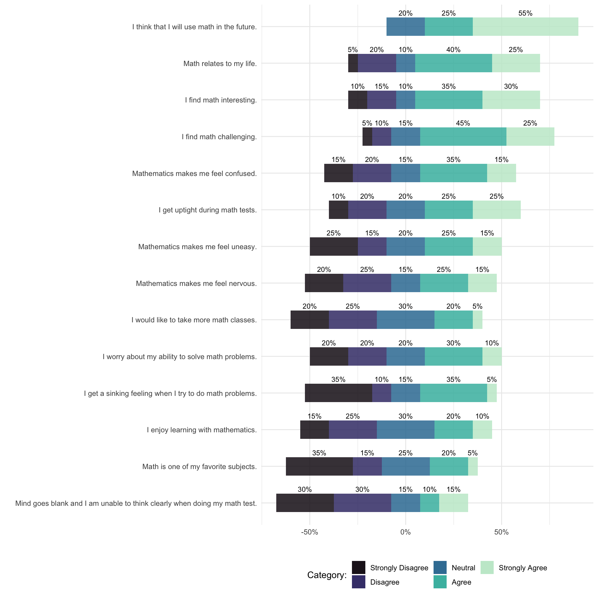

3 Likert plots
3.1 Single item plot
ggplot(magazines_counts, aes(x = response_num, y = pct, fill = response)) +
geom_col(alpha = .8) +
scale_y_continuous(labels = percent_format(accuracy = 1)) +
geom_text(
mapping = aes(label = paste0(round(pct * 100), "%")),
vjust = -0.5,
size = 3
) +
labs(
x = "Frequency reading magazines",
y = "Percentage of respondents",
fill = "Categories"
) +
scale_fill_viridis(discrete = TRUE, option = "mako", begin = .1, end = .9) +
theme_minimal() +
guides(fill = guide_legend(nrow = 2)) +
theme(legend.position = "bottom")3.2 Multiple items plots
ggplot(counts, aes(
x = item,
y = pct,
fill = reorder(response, desc(response))
)
) +
geom_col(alpha = .8) +
coord_flip() +
geom_text(
mapping = aes(label = paste0(round(pct * 100), "%")),
position = position_stack(vjust = 0.5),
size = 3
) +
scale_fill_viridis(
discrete = TRUE,
option = "mako",
direction = -1,
begin = .1,
end = .9
) +
scale_y_continuous(labels = percent_format(accuracy = 1)) +
labs(
x = "",
y = "",
color = "Rating",
fill = "Rating"
) +
theme_minimal() +
guides(fill = guide_legend(nrow = 2)) +
theme(legend.position = "bottom")
# Calculate halves of the neutral category
counts_split <- counts %>%
filter(response_num == 3) %>%
mutate(pct = pct / 2)
# Replace old neutral-category
new_counts <- filter(counts, response_num != 3)
new_counts <- full_join(new_counts, counts_split) %>%
arrange(item, response_num)
# Separate the data frames
new_counts1 <- filter(new_counts, response_num %in% 1:3)
new_counts2 <- filter(new_counts, response_num %in% 3:5)
# Create a colors vector
colors <- mako(n = 5, begin = .1, end = .9)
names(colors) <- levels(counts$response)
# Plot
p <- ggplot() +
geom_col(
data = new_counts1,
mapping = aes(x = item, y = -pct, fill = response),
alpha = .8
) +
geom_col(
data = new_counts2,
mapping = aes(x = item, y = pct, fill = response),
position = position_stack(reverse = TRUE),
alpha = .8
) +
coord_flip() +
scale_y_continuous(labels = percent_format(accuracy = 1)) +
scale_fill_manual(values = colors) +
labs(x = "", y = "", fill = "Category:") +
theme_minimal() +
guides(fill = guide_legend(nrow = 2)) +
theme(legend.position = "bottom")
p 
# Create labels
labels <- counts %>%
group_by(item) %>%
mutate(
temp = case_when(
response_num == 3 ~ pct / 2,
response_num < 4 ~ pct,
TRUE ~ 0),
bottom_half = sum(temp),
pos = cumsum(pct) - (pct / 2) - bottom_half
)
p + geom_text(
data = labels,
mapping = aes(
x = item,
y = pos,
label = paste0(round(pct * 100), "%")
),
size = 3
)
3.3 To do
The combination of stacked bar charts and overlayed error/CI bars for some ‘middle split’ seems informative:
See here for an example of a summary chart.